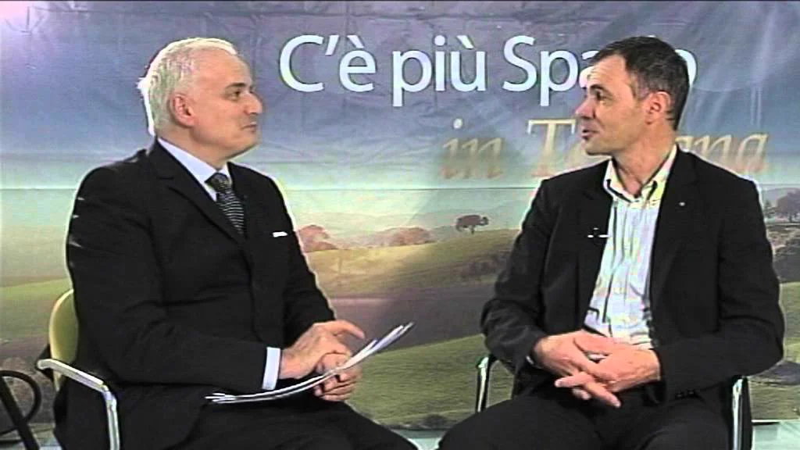
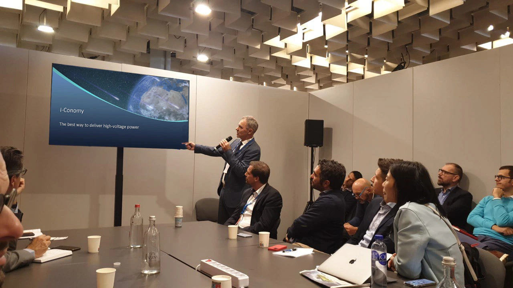

About I-Conomy
A spin-off of Aerospazio Tecnologie, designing DC/DC converters for space since the 1990s.
Who We Are
I-Conomy designs and manufactures state-of-the-art DC/DC converters for space applications using either qualified components or commercial components (ITAR-FREE) tested under radiation. The team specializes in solving electro/mechanical reliability and performance issues of high voltage power supplies for space use.
I-Conomy produces HV power supplies and HV custom systems guaranteed to operate in any vacuum condition so that there is no risk that outgassing of materials in space could cause dangerous discharges or corona effects.
For maximum vibration and shock resistance, flexible cables are used for control signals and power instead of pins soldered to the PCB — eliminating CTE-mismatch fractures in soldered joints. Standard modules are contained in aluminium boxes with four mounting holes for easy and reliable fastening by screws.
Prices and lead times are always very competitive — as is fair to expect from a team with more than 100 man-years of experience in this field.
I-Conomy CEO Francesco Petroni has always been at the forefront of technology thanks to years of intensive collaborations with the most important companies, agencies and research centres in the world. International space project management experience since the 1990s.
↓ Download CV (PDF)
Interviewed on C'è più Spazio — discussing the role of Italian companies in international space missions.

What We Offer